Our Installations
 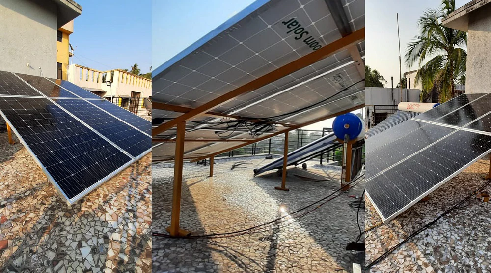
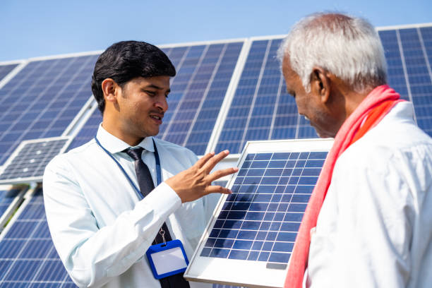
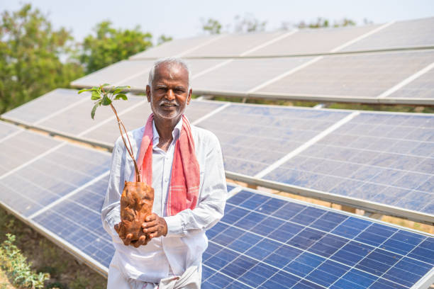
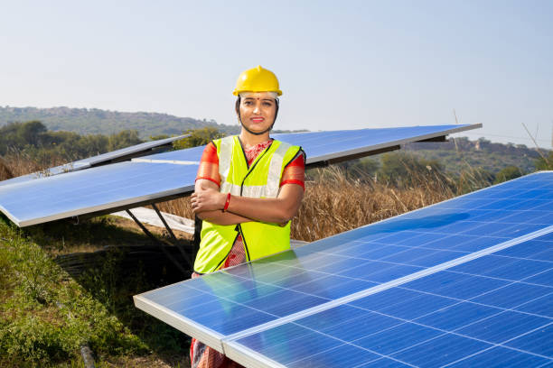
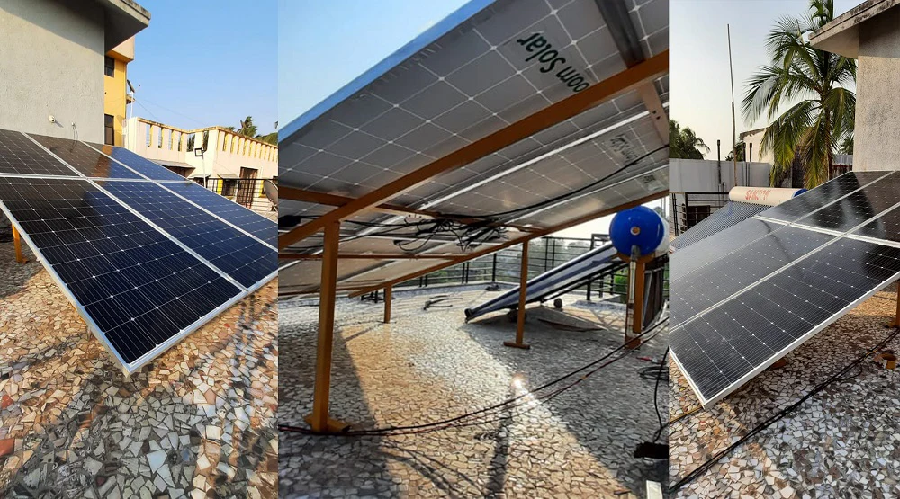
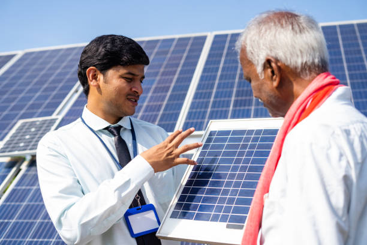
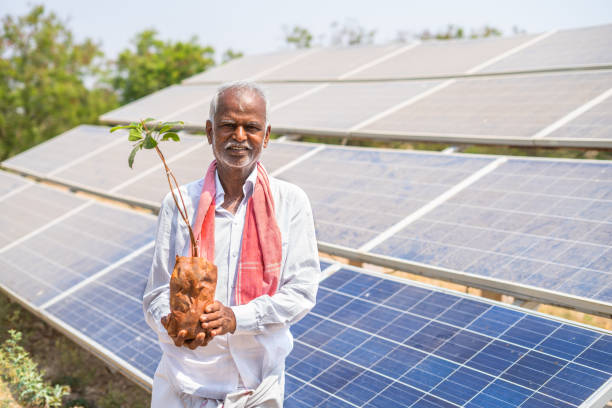
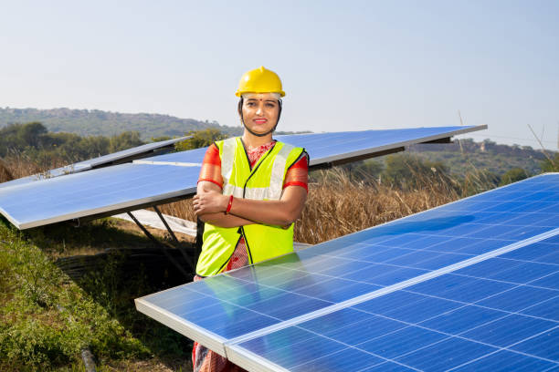
Delivering sustainable solar solutions with precision and innovation.
Solar energy systems generate electricity directly from sunlight, reducing dependence on grid power and lowering monthly electricity bills. Over time, especially in high-consumption households or commercial setups, the savings can be substantial.
Solar power produces electricity without emitting greenhouse gases or air pollutants during operation. Unlike fossil fuels such as coal or oil, it is a clean and renewable energy source that helps mitigate climate change.
Although the initial installation cost can be high, solar panels typically last 20–25 years or more, providing consistent returns through energy savings. In many regions, government subsidies and net metering policies further improve the return on investment.
Solar photovoltaic systems have no moving parts, which significantly reduces wear and tear. Routine cleaning and occasional inspection are usually sufficient to maintain optimal performance.
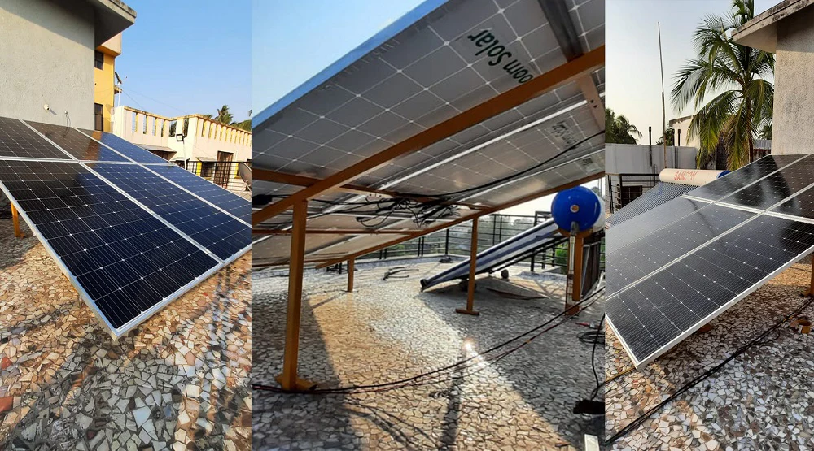
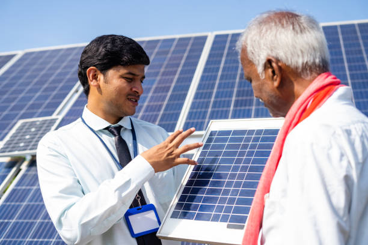
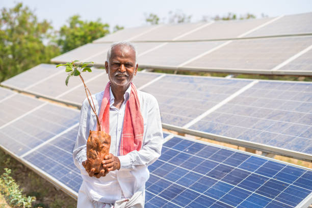
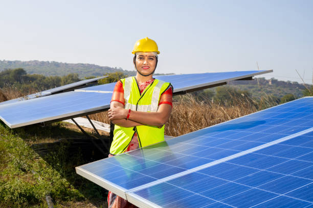